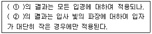
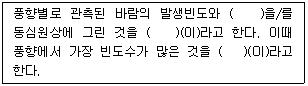
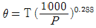
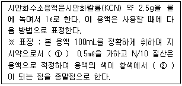
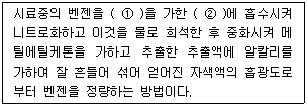
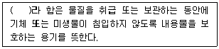
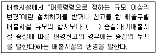
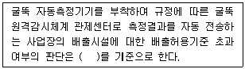
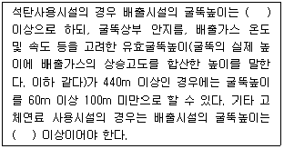

대기환경산업기사 (2014-09-20 기출문제)
1과목: 대기오염개론
1. 다음 중 인체내에서 콜레스테롤, 인지질 및 지방분의 합성을 저해하거나 기타 다른 영양물질의 대사장애를 일으키며, 만성폭로 시 설태가 끼는 대기오염물질의 원소기호로 가장 적합한 것은?
- Se
- Tl
- V
- Al
(정답률: 90%)

2. 실제굴뚝높이가 70m, 굴뚝내경 6m, 굴뚝가스 배출속도 15m/sec, 굴뚝주위의 풍속이 5m/sec이라면 유효굴뚝높이는? (단, △H=1.5×(Vs/U)×D 을 이용)
- 27m
- 97m
- 127m
- 147m
(정답률: 70%)
3. 대기안정도와 관련된 연기모양에 관한 설명으로 옳지 않은 것은?
- looping형은 과단열감률 상태의 대기일 때 발생하기 쉽다.
- conning형은 오염의 단면분포가 전형적인 가우시안 분포를 이룬다.
- Fumigation형은 오염물질 배출구 바로 주위에서 오염정도가 심하며, 이 때 지표의 오염농도는 가장 높다.
- trapping형은 보통 고기압지역에서 상공에 복사역전층이 있고, 지표 부근에 침강역전층이 있는 경우 발생한다.
(정답률: 60%)
4. 다음 중 염화수소 배출관련 업종으로 가장 거리가 먼 것은?
- 염산제조
- 활성탄제조
- 소오다공업
- 유리공업
(정답률: 78%)
5. 라돈에 관한 설명으로 옳지 않은 것은?
- 지구상에서 발견된 약 70여 가지의 자연방사능 물질중의 하나이다.
- 사람이 매우 흡입하기 쉬운 가스성 물질이다.
- 반감기는 3.8일이며, 라듐의 핵분열 때 생성되는 물질이다.
- 액화되면 푸른색을 띠며, 공기보다 1.2배 무거워 지표에 가깝게 존재하며, 화학적으로 반응을 나타낸다.
(정답률: 88%)
6. 다음 특정물질 중 오존층 파괴지수가 가장 큰 것은?
- CF3Br
- CCl4
- CH2BrCl
- CH2FBr
(정답률: 67%)
7. 다음 온실가스중 동일한 부피에서 가장 무거운 물질은?
- CO2
- CH4
- N2O
- O3
(정답률: 81%)
8. 자동차에서 배출되는 배기가스에 관한 설명으로 가장 거리가 먼 것은?
- 일반적으로 자동차의 주요 배출 유해가스는 CO, NOx, HC 등이다.
- 휘발유 자동차의 경우 CO는 가속시, HC는 정속시, NOx는 감속시에 상대적으로 많이 발생한다.
- CO는 연료량에 비하여 공기량이 부족할 경우에 발생하고, NOx는 높은 연소온도에서 많이 발생하며, 매연은 연료가 미연소하여 발생한다.
- 디젤 자동차의 경우 CO 및 HC가 휘발유 자동차에 비해서 상대적으로 적게 배출된다.
(정답률: 90%)
9. 다음 식물 중 오존에 대해 가장 예민하고 피해가 커서 지표식물로도 이용되는 것은?
- 목화
- 상추
- 담배
- 블루그래스
(정답률: 78%)
10. 입자에 의한 빛산란에 관한 설명이다. ( )안에 알맞은 것은?

- ① Maxwell, ② tyndall
- ① tyndall, ② Maxwell
- ① Mie, ② Rayleigh
- ① Rayleigh, ② Mie
(정답률: 85%)
11. 다음 국제적인 환경오염사건 중 MIC(메틸이소시아네이트)가스의 유출로 발생한 것은?
- 도노라(Donora) 사건
- 보팔(Bhopal) 사건
- 크라카타우(Krakatau) 사건
- 도꾜-요꼬하마(Tokyo-Yokohama) 사건
(정답률: 88%)
12. ( )안에 들어갈 말로 순서대로 알맞게 묶여진 것은?

- 풍속-바람장미-주풍
- 풍향-바람분포도-지균풍
- 난류도-연기형태-경도풍
- 기온역전도-환경감률-확산풍
(정답률: 87%)
13. 대기압력이 950mb인 높이에서의 온도가 11.6℃ 이였다. 온위는 얼마인가? (단,

)- 288.8K
- 297.4K
- 309.5K
- 320.3K
(정답률: 77%)
14. 각 오염물질의 특성 및 영향에 관한 설명으로 가장 거리가 먼 것은?
- 염소는 암모니아에 비해 훨씬 수용성이 강하고, 호흡기 전체에 영향을 미치기보다는 후두에 부종을 주로 유발한다.
- 포스겐 자체는 자극성이 경미하지만 수중에서 재빨리 염산으로 분해되어 거의 급성 전구증상이 없이 치사량을 흡입할 수 있기 때문에 매우 위험하다.
- 브롬화합물은 부식성이 강하며 주로 상기도에 대하여 급성 흡입효과를 지니고, 고농도에서 일정기간이 지나면 폐부종을 유발하시도 한다.
- 질소산화물은 유기물의 분해 시 생성되기도 하며, 마초 저장고에서 일하는 농부들에 silo fillers disease을 일으키기도 한다.
(정답률: 53%)
15. 굴뚝의 유효고도가 40m이다. 일반적인 조건이 같을 때 최대지표농도를 절반으로 감소시키기 위해서는 유효고도를 얼마만큼 더 증가시켜야 하는가?
- 약 11m
- 약 17m
- 약 20m
- 약 24m
(정답률: 70%)
16. 다음 중 일반적으로 건조대기 내 체류시간이 가장 긴 것은?
- N2
- O2
- CH4
- CO2
(정답률: 72%)
17. 최대에너지가 복사될 때 이용되는 파장( λm : μm)과 흑체의 표면온도가 (T : 절대온도 단위)와의 관계를 나타내는 복사이론에 관한 법칙은? (단, 비례상수 a=0.2898cm K)
- 슈테판－볼츠만의 법칙
- 비인의 변위법칙
- 플랑크 법칙
- 알베도의 법칙
(정답률: 79%)
18. 다음 중 포름알데히드가 주된 배출관련 업종인 것은?
- 금속제련. 쓰레기소각로, 냉동공장
- 석탄화력발전소, 펄프제조
- 염색공업, 나일론 및 암모니아 제조공장
- 피혁공장, 합성수지공장, 포르말린 제조업
(정답률: 81%)
19. 경도모델(또는 K-이론모델)을 적용하기 위한 가정으로 거리가 먼 것은?
- 연기의 축에 직각인 단면에서 오염의 농도분포는 가우스 분포(정규분포)이다.
- 오염물질은 지표를 침투하지 못하고 반사한다.
- 배출원에서 오염물질의 농도는 무관하다.
- 배출원에서 배출된 오염물질은 그 후 소멸하고, 확산계수는 시간에 따라 변한다.
(정답률: 60%)
20. 다음 대기오염물질의 분류 중 2차 오염물질에 해당하지 않는 것은?
- NOCl
- H2O2
- NO2
- CO2
(정답률: 70%)
2과목: 대기오염 공정시험 기준(방법)
21. 굴뚝반경이 2.2m인 원형 굴뚝에서 먼지를 채취하고자 할 때의 측정점수는?
- 8
- 12
- 16
- 20
(정답률: 83%)
22. 기체-액체 크로마토그래프법에서 분배형 충전물질로 사용되는 내화벽돌에 관한 설명으로 가장 적합한 것은?
- 일반적인 내화점토를 사용한 것이 아니고, 흑토를 주성분으로 한 내화온도 1100℃ 정도의 단열벽돌을 뜻한다.
- 일반적인 내화점토를 사용한 것이 아니고, 규조토를 주성분으로 한 내화온도 1100℃ 정도의 단열벽돌을 뜻한다.
- 일반적인 내화점토를 사용한 내화온도 1100℃ 정도의 단열벽돌을 뜻한다.
- 일반적인 내화점토를 사용한 내화온도 1800℃ 정도의 단열벽돌을 뜻한다.
(정답률: 74%)
23. 대기오염공정시험기준상 굴뚝 배출가스 중의 일산화탄소 분석방법과 가장 거리가 먼 것은?
- 비분산적외선 분석법
- 정전위 전해법
- 음이온 전극법
- 가스크로마토그래프법
(정답률: 75%)
24. 시료 중 중금속을 원자흡수분광광도법(원자흡광광도법)으로 분석하기 위하여 회화법으로 전처리 할 경우 사용하는 용융제로 적합한 것은?
- HCl + H2SO4
- Na2CO3 +NaNO3
- (NH4)2SO4 +HBr
- HBr + NH4OH
(정답률: 62%)
25. 흡광도 눈금 보정을 위한 용액 제조방법으로 가장 적합한 것은?
- 100℃에서 2시간 이상 건조한 과망간산 칼륨(1급이상)을 N/10 수산화나트륨 용액에 녹여 과망간산 칼륨용액을 만들어 그 농도는 KMnO4으로서 0.0125g/가 되도록 한다.
- 110℃에서 3시간 이상 건조한 과망간산 칼륨(1급이상)을 N/20 수산화나트륨 용액에 녹여 과망간산 칼륨용액을 만들어 그 농도는 KMnO4으로서 0.0155g/가 되도록 한다.
- 100℃에서 2시간 이상 건조한 중크롬산 칼륨(1급이상)을 N/10 수산화나트륨 용액에 녹여 중크롬산 칼륨용액을 만들어 그 농도는 K2Cr2O7으로서 0.0153g/가 되도록 한다.
- 110℃에서 3시간 이상 건조한 중크롬산 칼륨(1급이상)을 N/20 수산화나트륨 용액에 녹여 중크롬산 칼륨용액을 만들어 그 농도는 K2Cr2O7으로서 0.0303g/가 되도록 한다.
(정답률: 69%)
26. 물질의 파쇄, 선별, 퇴적, 이적, 기타 기계적 처리 또는 연소, 합성분해시 굴뚝에서 배출되는 먼지를 측정하는 방법에 관한 설명으로 옳지 않은 것은?(오류 신고가 접수된 문제입니다. 반드시 정답과 해설을 확인하시기 바랍니다.)
- 반자동식 채취기에 의한 방법으로써 먼지가 포집된 여과지를 110 ± 5℃(배출가스온도가 110 ± 5℃이상일 경우 배출가스온도와 동일하게 건조)에서 충분히(1-3시간) 건조시켜 부착수분을 제거한 후 먼지의 중량농도를 계산한다.
- 반자동식 채취기에 의한 방법으로써 배연탈황시설과 황산미스트에 의해서 먼지농도가 영향을 받은 경우에는 여과지를 160℃ 이상에서 4시간이상 건조시킨 후 먼지농도를 계산한다.
- 측정공은 측정위치로 선정된 굴뚝 벽면에 내경 100 ~ 150mm 정도로 설치하고 측정시 이외에는 마개를 막아 밀폐하고 측정시에도 흡입관 삽입 이외의 공간은 공기가 새지 않도록 밀폐되어야 한다.
- 굴뚝 단면적이 0.25m2 이하로 소규모일 경우에는 그 굴뚝 단면의 중심을 대표점으로 하여 1점만 측정한다.
(정답률: 53%)
27. 다음은 피리졸론법으로 시안화수소를 분석할 때 시안화수소 표정방법에 관한 사항이다. ( )안에 알맞은 것은?

- ① p-디메틸 아미노 벨질리덴 로다닌의 아세톤 용액, ② 청색
- ① p-디메틸 아미노 벨질리덴 로다닌의 아세톤 용액, ② 적색
- ① 0.1N 수산화나트륨 용액, ② 청색
- ① 0.1N 수산화나트륨 용액, ② 적색
(정답률: 74%)
28. 환경대기 중의 아황산가스 농도를 측정함에 있어 파라로자닐린법을 사용할 경우 알려진 주요 방해물질과 거리가 먼 것은?
- Cr
- O3
- NOx
- NH3
(정답률: 71%)
29. 환경대기 내의 옥시단트(오존으로서) 측정방법 중 중성요오도화 칼륨법(수동)에 관한 설명으로 옳지 않은 것은?
- 시료를 채취한 후 1시간이내에 분석할 수 있을 때 사용할 수 있으며 한 시간내에 측정할 수 없을 때는 알칼리성 요오드화 칼륨법을 사용하여야 한다.
- 대기중에 존재하는 오존과 다른 옥시단트가 pH 6.8의 요오드화 칼륨 용액에 흡수되면 옥시단트 농도에 해당하는 요오드가 유리되며 이 유리된 요오드를 파장 217nm에서 흡광도를 측정하여 정량한다.
- 산화성 가스로는 아황산가스 및 황화수소가 있으며 이들은 부(-)의 영향을 미친다.
- PAN은 오존의 당량, 몰, 농도의 약 50%의 영향을 미친다.
(정답률: 69%)
30. 다음은 굴뚝 배출가스 중 흡광광도법(메틸에틸케톤법)에 의한 벤젠 분석방법이다. ( )안에 알맞은 것은?

- ① 황산암모늄, ② 염산
- ① 염화암모늄, ② 질산
- ① 질산암모늄, ② 황산
- ① 염화암모늄, ② 황산
(정답률: 70%)
31. 원자흡광광도법에서 사용되는 용어에 관한 설명으로 옳지 않은 것은?
- 슬롯버너(Slot Burner, Fish Tail Burner) : 가스의 분출구가 세극상(細隙狀)으로 된 버너
- 선프로파일(Line Profile) : 불꽃중에서의 광로(光路)를 길게 하고 흡수를 증대시키기 위하여 반사를 이용하여 불꽃중에 빛(光束)을 여러번 투과시키는 것
- 공명선(Resonance Line) : 원자가 외부로부터 빛을 흡수했다가 다시 먼저 상태로 돌아갈 때(遷移) 방사하는 스펙트럼선
- 역화(Flame Back) : 불꽃의 연소속도가 크고 혼합기체의 분출속도가 작을 때 연소현상이 내부로 옮겨지는 것
(정답률: 75%)
32. 500mmH2O는 몇 mmHg인가?
- 19mmHg
- 28mmHg
- 37mmHg
- 45mmHg
(정답률: 74%)
33. 폐기물 소각로 등에서 배출되는 다이옥신류의 측정 및 분석에 사용되는 증류수를 세정할 때 사용하는 시약은?
- 노말헥산
- 디클로로메탄
- 톨루엔
- 아세톤
(정답률: 61%)
34. 실험의 기재 및 용어에 관한 설명으로 옳지 않은 것은?
- “감압 또는 진공”이라 함은 따로 규정이 없는 한 15㎜Hg이하를 뜻한다.
- 용액의 액성(液性)표시는 따로 규정이 없는 한 유리적극법에 의한 pH미터로 측정한 것을 뜻한다.
- 시료의 시험, 바탕시험 및 표준액에 대한 시험을 일련의 동일시험으로 행할 때 사용하는 시약 또는 시액은 동일롯트(Lot)로 조제된 것을 사용한다.
- “항량이 될 때까지 건조한다 또는 강열한다”라 함은 따로 규정이 없는 한 보통의 건조방법으로 1시간 더 건조 또는 강열할 때 전후 무게의 차가 매 g당 0.5㎎이하일 때를 뜻한다.
(정답률: 78%)
35. 굴뚝 배출가스 중 이황화탄소 분석방법으로 옳지 않은 것은?
- 흡광광도법은 디에틸아민동 용액에서 시료가스를 흡수시켜 생성된 디에틸 디티오카바민산동의 흡광도를 535nm의 파장에서 측정하여 이황화탄소를 정량한다.
- 가스크로마토 그래프법은 불꽃광도검출기(炎光光度檢出器 Flame Photometric Detector)를 구비한 가스크로마토그래프를 사용하여 정량한다. 이 방법은 이황화탄소농도 0.5V/V ppm이상의 분석에 적합하다.
- 배출가스중에 포함된 황화합물의 대부분이 이황화탄소이어서 전황화합물로 측정해도 지장이 없는 경우에는 분리관을 생략한 불꽃광도 검출방식 연속분석계를 사용해도 좋다.
- 채취관, 도관 등에는 경질유리, 불소수지관 등을 사용한다.
(정답률: 61%)
36. 굴뚝 배출가스 중의 무기 불소화합물을 불소 이온으로 분석하는 방법으로 거리가 먼 것은?(오류 신고가 접수된 문제입니다. 반드시 정답과 해설을 확인하시기 바랍니다.)
- 용량법(질산토륨 - 네오트린법)은 불소 이온을 방해이온과 분리한 다음 완충액을 가하여 pH를 조절하고 네오트린을 가한 다음 질산나트륨 용액으로 적정한다. 이 방법에서의 정량범위는 HF로서 0.6~4.2㎖이다.
- 시료 채취관은 배출가스중의 무기 불소 화합물에 의하여 부식되지 않는 재질의 관, 예를 들면 불소수지관, 스테인레스강관, 구리관 등을 사용한다.
- 시료중의 무기 불소 화합물과 수분이 응축하는 것을 막기 위하여 시료 채취관 및 시료 채취관에서부터 흡수병까지의 사이를 140℃이상으로 가열해 준다.
- 시료 채취관에서부터 흡수병까지의 가열부분에 있는 접속부는 갈아 맞춘것으로하고 일반고무관 등으로 접속한다.
(정답률: 46%)
37. 다음은 용기에 관한 설명이다. ( )안에 가장 적합한 것은?

- 밀봉용기(密封容器)
- 밀폐용기(密閉容器)
- 기밀용기(機密容器)
- 차광용기(遮光容器)
(정답률: 77%)
38. 굴뚝내의 배출가스 유속을 피토우관으로 측정한 결과 그 동압이 2.2mmHg 이었다면 굴뚝내의 배출가스의 평균유속(m/sec)은? (단, 배출가스 온도 250℃, 공기의 비중량 1.3kg/Sm3 , 피토우관계수 1.2이다.)
- 8.6
- 16.9
- 25.5
- 35.3
(정답률: 55%)
39. 이온크로마토그래프법에 사용되는 장치에 관한 설명으로 옳지 않은 것은?
- 용리액조는 일반적으로 폴리에틸렌이나 경질 유리제를 사용한다.
- 분리관의 경우 일부는 스테인레스관이 사용되지만 금속이온 분리용으로는 좋지 않다.
- 써프렛서란 용리액에 사용되는 전해질 성분을 제거하기 위하여 분리관 뒤에 직렬로 접속시킨 것으로써 전해질을 물 또는 저 전도도의 용매로 바꿔줌으로써 전기 전도도 셀에서 목적이온 성분과 전기 전도도만을 고감도로 감출할 수 있게 해주는 것으로써 관형은 음이온에는 스티롤계 강염기형(OH-)의 수지가 충진된 것을 사용한다.
- 검출기는 분리관 용리액 중의 시료성분의 유무와 량을 검출하는 부분으로 일반적으로 전도도 검출기를 많이 사용하고, 그외 자외선, 가시선 흡수검출기(UV, VIS 검출기), 전기화학적 검출기 등이 사용된다.
(정답률: 72%)
40. 가스크로마토그래프법에 사용되는 장치에 관한 설명으로 거리가 먼 것은?
- 수소염 이온화 검출기는 수소연소노즐(Nozzle), 이온수집기(Ion Collector)와 함께 대극(對極) 및 배기구(排氣口)로 구성되는 본체와 이 전극 사이에 직류전압을 주어 흐르는 이온전류를 측정하기 위한 직류전압 변환회로, 감도조절부, 신호감쇄부 등으로 구성된다.
- 방사성 동위원소를 사용하는 검출기에 대하여는 별도로 과열방지기구, 누출방지기구 등을 설치해야 한다.
- 온도조절 정밀도는 ±0.5℃의 범위이내 전원 전압변동 10%에 대하여 온도변화 ±0.5℃ 범위이내(오븐의 온도가 150℃ 부근일 때)이어야 한다.
- 기록계는 스트립 차아트(Strip Chart)식 자동평형 기록계로 스팬(Span) 전압 10mV, 펜 응답시간(Pen Response Time) 5초 이내, 기록지 이동속도(Chart Speed)는 10㎜/분을 포함한 다단변속(多段變速)이 가능한 것이어야 한다.
(정답률: 61%)
3과목: 대기오염방지기술
41. 먼지 농도가 10g/Sm3인 매연을 집진율 80%인 집진장치로 1차 처리하고 다시 2차 집진장치로 처리한 결과 배출가스 중 먼지 농도가 0.2g/Sm3 이 되었다. 이때 2차 집진장치의 집진율은? (단, 직렬기준)
- 70%
- 80%
- 85%
- 90%
(정답률: 67%)
42. CH4 0.5Sm3, C2H6 0.5Sm3를 m=1.3으로 완전 연소시킬 경우 습연소가스량(Sm3/Sm3)은?
- 약 18
- 약 22
- 약 25
- 약 28
(정답률: 45%)
43. 입경측정방법 중 Cascade impactor법에 관한 설명으로 가장 거리가 먼 것은?
- 액상 침강법과 함께 직접 측정법에 해당한다.
- 널리 이용되는 방법으로 관성충돌을 이용하여 입경을 측정하는 방법이다.
- 측정된 입경은 stokes경을 의미하며, 입자의 밀도를 보정하면 공기동력학경으로 나타낼 수있다.
- Cascade impactor의 단수는 임의로 설계, 제작할 수 있으나 보통 9단이 많이 사용된다.
(정답률: 48%)
44. 어떤 2차 반응에서 반응물질의 농도를 같게 했을 때 그 10%가 반응하는데 300초가 걸렸다면 88%가 반응하는 데는 얼마가 걸리겠는가?
- 17,000초
- 18,500초
- 19,800초
- 24,500초
(정답률: 55%)
45. 반지름 200mm, 유효 높이 12m인 원통형 filter bag을 사용하여 농도 6g/m3인 배출가스를 20m3/sec로 처리하고자 한다. 겉보기 여과속도를 1.2cm/sec로 할 때 필요한 filter bag의 수는?
- 111개
- 115개
- 121개
- 125개
(정답률: 55%)
46. 100Sm3/hr의 배출가스를 방출하는 연소로를 건식석회석법으로 SO2를 처리하고자 한다. 이 때 배출가스의 SO2농도가 2,500ppm 일 때 SO2를 100%제거하기 위한 필요한 CaCO3의 양은?
- 0.84kg/hr
- 1.12kg/hr
- 1.58kg/hr
- 2.17kg/hr
(정답률: 56%)
47. 여과 집진장치에서 여과포가 마멸되어 집진율이 99.9%에서 99.5%로 낮아졌을 때 출구에서 배출되는 먼지 농도는 어떻게 변화 되겠는가? (단, 기타 조건은 변경이 없다고 가정한다.)
- 원래의 1/2
- 원래의 4배
- 원래의 5배
- 원래의 10배
(정답률: 70%)
48. 다음 중 각종 발생원에서 배출되는 먼지입자의 진비중(S)과 겉보기 비중(Sa)의 비(S/Sa)가 가장 큰 것은?
- 시멘트킬른 발생먼지
- 카본블랙 먼지
- 골재건조기 먼지
- 미분탄보일러 발생먼지
(정답률: 82%)
49. 여과집진장치의 먼지부하가 360g/m2에 달할 때 먼지를 탈락시키고자 한다. 이 때 탈락시간 간격은? (단, 여과집진장치에 유입되는 함진농도는 10g/m3, 여과속도는 7200cm/hr 이고, 집진율은 100%로 본다. )
- 25min
- 30min
- 35min
- 40min
(정답률: 65%)
50. 다음 연료 중 검댕의 발생이 가장 적은 것은?
- 저휘발분 역청탄
- 코오크스
- 중유
- 고휘발분 역청탄
(정답률: 75%)
51. 충전탑에 사용되는 충전물의 구비조건이라 할 수 없는 것은?
- 압력손실이 작고 충진밀도가 클 것
- 공극률이 작을 것
- 단위용적에 대한 표면적이 클 것
- 액가스 분포를 균일하게 유지 할 수 있을 것
(정답률: 65%)
52. 연료에 있어 매연의 발생에 대한 설명으로 옳지 않은 것은?
- 연료중의 C/H비가 클수록 발생하기 쉽다.
- 탄소결합을 절단하는 것보다 탈수소가 쉬운 쪽이 매연이 생기기 쉽다.
- 탈수소, 중합 및 고리화합물 등과 같이 반응이 일어나기 쉬운 탄화수소 일수록 잘 생긴다.
- 분해나 산화되기 쉬운 탄화수소 일수록 발생량은 많다.
(정답률: 62%)
53. 다음 연료 중 황(S)성분의 함량 순서로 가장 적합한 것은?
- 중유 ＞ 경유 ＞ 등유 ＞ 휘발유 ＞ LPG
- 중유 ＞ 등유 ＞ 경유 ＞ 휘발유 ＞ LPG
- 중유 ＞ 석탄 ＞ 등유 ＞ 경유 ＞ LPG
- 석탄＞ 중유＞ 등유＞ 경유＞휘발유
(정답률: 82%)
54. 세정식 집진장치에 관한 설명으로 가장 거리가 먼 것은?
- 제트스크러버는 분사장치를 이용하여 세정액을 고압분무시켜 발생하는 승압효과에 의해 10~20m/sec 속도로 흡인되는 함진가스 중의 먼지를 액적에 포집한다.
- 제트스크러버의 액가스비는 10~50L/m3 정도로 다른 가압수식 세정집진장치에 비해 10배 이상이다.
- 충전탑에서 1~5㎛정도 크기의 입자를 제거할 경우 장치내 처리가스의 속도는 대략 25cm/sec 이하 정도이어야 한다.
- 분무탑 또는 살수탑은 장치 내에 살수노즐을 통하여 분무한 세정액과 배출가스(유입속도 10~15m/sec)를 향류접촉시키며, 액가스비는 0.1~0.5L/m3 정도이다.
(정답률: 49%)
55. 다음 중 공기비가 작을 경우 연소실내에서 발생될 수 있는 상황을 가장 잘 설명한 것은?
- 가스의 폭발위험과 매연발생이 크다.
- 배기가스 중 NO2량이 증가한다.
- 부식이 촉진된다.
- 연소온도가 낮아진다.
(정답률: 64%)
56. 유입계수가 0.78, 속도압이 22.5mmH2O 일 때 후드의 압력손실(mmH2O)은?
- 9.5
- 10.5
- 14.5
- 18.5
(정답률: 55%)
57. 순수한 Propane 500kg을 액화시켜 만든 LPG가 기화될 때 이 기체의 용적은? (단, 표준상태 기준)
- 약 329Sm3
- 약 255Sm3
- 약 2⑤Sm3
- 약 191Sm3
(정답률: 66%)
58. 전기집진장치의 분리속도(이동속도)는 커닝햄 보정계수(stokes Cunningham) Km이 커지는 조건으로 알맞게 짝지은 것은? (단, Km≥1)
- 먼지의 입자가 작을수록, 가스압력이 낮을수록
- 먼지의 입자가 작을수록, 가스압력이 높을수록
- 먼지의 입자가 클수록, 가스압력이 낮을수록
- 먼지의 입자가 클수록, 가스압력이 높을수록
(정답률: 71%)
59. 석탄을 공업분석하여 다음과 같은 연료 분석치를 얻었다. 이 석탄의 연료비는?
- 0.8
- 1.0
- 1.3
- 1.5
(정답률: 58%)
60. 전기집진장치에서 2차 전류가 많이 흐를 때의 원인으로 가장 거리가 먼 것은?
- 방전극이 너무 굵을 때
- 먼지의 농도가 너무 낮을 때
- 이온이동도가 큰 가스를 처리할 때
- 공기 부하시험을 행할 때
(정답률: 55%)
4과목: 대기환경 관계 법규
61. 대기환경보전법규상 자동차연료 제조기준 중 휘발유의 90% 유출온도(℃) 기준은?
- 200이하
- 190이하
- 185이하
- 170이하
(정답률: 77%)
62. 대기환경보전법상 부품의 결함을 시정하여야 하는 자동차제작자가 정당한 사유없이 결함시정명령을 위반한 경우 벌칙기준으로 옳은 것은?
- 7년 이하의 징역이나 1억원 이하의 벌금
- 5년 이하의 징역이나 3천만원 이하의 벌금
- 1년 이하의 징역이나 1천만원 이하의 벌금
- 1년 이하의 징역이나 500만원 이하의 벌금
(정답률: 36%)
63. 대기환경보전법규상 정밀검사대상 자동차 및 정밀검사 유효기간기준 중 “차령 2년 경과된 사업용 기타 자동차”의 검사유효기간은? (단, “기타자동차”란 자동차관리법규상 승용자동차를 제외한 승합·화물·특수자동차를 말한다.)
- 1년
- 2년
- 3년
- 5년
(정답률: 75%)
64. 대기환경보전법규상 장치에 따라 배출가스 관련부품을 분류할 때 다음 중 연료공급장치(Fuel Metering System)와 가장 거리가 먼 것은?
- 가스분석밸브(Gas Analysis Valve)
- 대기압센서(Manifold Absolute Pressure Sensor)
- 스로틀포지션센서(Throttle Position Sensor)
- 연료압력조절기(Fuel Pressure Regulator)
(정답률: 55%)
65. 대기환경보전법규상 배출시설을 설치·운영하는 사업자에 대하여 조업정지를 명하여야 하는 경우로서 그 조업정지가 주민의 생활, 대외적인 신용·고용·물가 등 국민경제, 그 밖에 공익에 현저한 지장을 줄 우려가 있다고 인정되는 경우 조업정지처분을 갈음하여 과징금을 부과할 수 있다. 이때 과징금의 부과기준에 적용되지 않는 것은?
- 오염물질별 부가금액
- 조업정지일수
- 1일당 부과금액
- 사업장 규모별 부과계수
(정답률: 58%)
66. 대기환경보전법령상 녹지지역의 기본부과금의 지역별 부과계수는? (단, 국토의 계획 및 이용에 관한 법률상 녹지지역은 Ⅲ지역에 해당함)
- 0.5
- 1.0
- 1.5
- 2.0
(정답률: 68%)
67. 다음은 대기환경보전법령상 변경신고에 따른 가동개시신고의 대상 규모기준에 관한 사항이다. ( )안에 알맞은 것은?

- 100분의 10 이상
- 100분의 20 이상
- 100분의 25 이상
- 100분의 30 이상
(정답률: 61%)
68. 대기환경보전법규상 첨가제 검사기관의 기술능력 및 검사장비 기준으로 옳지 않은 것은?
- 검사원의 자격은「국가기술자격법 시행규칙」상 기계(자동차분야), 화공 및 세라믹, 환경 직무분야의 기사자격 이상을 취득한 사람이어야 한다.
- 검사원의 수 4명 이상이어야 한다.
- 검사원중 2명 이상은 해당 검사 업무에 3년 이상 종사한 경험이 있는 사람이어야 한다.
- 휘발유ㆍ경유ㆍ바이오디젤 검사기관과 LPGㆍCNGㆍ바이오가스 검사기관의 기술능력 기준은 같으며, 두 검사 업무를 함께 하려는 경우에는 기술능력을 중복하여 갖추지 아니할 수 있다.
(정답률: 69%)
69. 대기환경보전법령상 청정연료를 사용하여야 하는 대상시설의 범위로 옳지 않은 것은?
- 산업용 열병합 발전시설
- 건축법 시행령에 따른 공동주택으로서 동일한 보일러를 이용하여 하나의 단지 또는 여러 개의 단지가 공동으로 열을 이용하는 중앙집중난방방식(지역냉난방방식을 포함한다)으로 열을 공급받고, 단지 내의 모든 세대의 평균 전용면적이 40.0m2를 초과하는 공동주택
- 전체 보일러의 시간당 총 증발량이 0.2톤 이상인 업무용보일러(영업용 및 공공용보일러를 포함하되, 산업용보일러는 제외한다)
- 집단에너지 사업법 시행령에 따른 지역냉난방사업을 위한 시설
(정답률: 68%)
70. 대기환경보전법규상 운행차의 정밀검사 방법·기준 및 검사대상 항목의 일반기준으로 거리가 먼 것은?
- 운행차의 정밀검사방법 및 기준 외의 사항에 대해서는 국토교통부장관이 정하여 고시한다.
- 휘발유와 가스를 같이 사용하는 자동차는 연료를 가스로 전환한 상태에서 배출가스검사를 실시하여야 한다.
- 특수 용도로 사용하기 위하여 특수장치 또는 엔진성능 제어장치 등을 부착하여 엔진최고회전수 등을 제한하는 자동차인 경우에는 해당 자동차의 측정 엔진최고회전수를 엔진정격회전수로 수정ㆍ적용하여 배출가스검사를 시행할 수 있다.
- 차대동력계상에서 자동차의 운전은 검사기술인력이 직접 수행하여야 한다.
(정답률: 55%)
71. 대기환경보전법령상 기본부과금의 부과대상이 되는 오염물질은?
- 암모니아
- 황화수소
- 황산화물
- 불소화합물
(정답률: 57%)
72. 대기환경보전법규상 대기오염물질의 배출허용기준과 관련하여 굴뚝 원격감시체계 관제센터로 측정결과를 자동 전송하는 배출시설에 관한 기준이다. ( )안에 알맞은 것은?

- 매 5분 평균치
- 매 10분 평균치
- 매 30분 평균치
- 매 1시간 평균치
(정답률: 73%)
73. 대기환경보전법상에서 사용하는 용어의 뜻으로 옳지 않은 것은?
- "먼지"란 연소할 때에 생기는 유리탄소가 주가 되는 미세한 입자상물질
- "휘발성유기화합물"이란 탄화수소류 중 석유화학제품, 유기용제, 그 밖의 물질로서 환경부장관이 관계 중앙행정기관의 장과 협의하여 고시하는 것을 말한다.
- "저공해엔진"이란 자동차에서 배출되는 대기오염물질을 줄이기 위한 엔진(엔진 개조에 사용하는 부품을 포함한다)으로서 환경부령으로 정하는 배출허용기준에 맞는 엔진을 말한다.
- "검댕"이란 연소할 때에 생기는 유리(遊離) 탄소가 응결하여 입자의 지름이 1미크론 이상이 되는 입자상물질을 말한다.
(정답률: 42%)
74. 대기환경보전법규상 대기오염 방지시설과 거리가 먼 것은?
- 중화에 의한 시설
- 음파집진시설
- 응축에 의한 시설
- 직접연소에 의한 시설
(정답률: 47%)
75. 대기환경보전법상 사업자는 배출시설과 방지시설의 정상적인 운영·관리를 위하여 환경기술인을 임명하여야 하나, 이를 위반하여 환경기술인을 임명하지 아니한 경우의 과태료 부과기준으로 옳은 것은?
- 1천만원 이하의 과태료
- 500만원 이하의 과태료
- 300만원 이하의 과태료
- 100만원 이하의 과태료
(정답률: 57%)
76. 대기환경보전법령상 부과금 납부명령을 받은 사업자가 과실로 확정배출량을 잘못 신청하여 제출한 경우로서 배출부과금의 조정을 산정하고자 한다. 이 때 조정신청은 부과금 납부통지서를 받은 날부터 최대 얼마 이내에 하여야 하는가?
- 10일 이내에
- 15일 이내에
- 30일 이내에
- 60일 이내에
(정답률: 58%)
77. 대기환경보전법규상 과태료 부과기준으로 옳지 않은 것은?
- 일반기준으로 위반행위자가 위반행위를 바로 정정하거나 시정하여 해소한 경우에는 과태료 금액의 2분의 1범위에서 그 금액을 줄일 수 있다.
- 위반행위의 횟수에 따른 부과기준은 해당 위반행위가 있는 날 이전 최근 2년간 같은 위반행위로 부과처분을 받은 경우에 적용한다.
- 위반행위의 횟수에 따른 부과기준은 규정에 따른 기간에 같은 위반행위로 부과처분을 받은 경우에 적용하는데, 이 경우 위반행위에 대하여 과태료를 부과처분한 날과 그 처분후에 다시 같은 위반행위를 하여 적발된 날을 각각 기준으로 하여 위반횟수를 계산한다.
- 배출허용기준 확인여부를 위해 설치한 측정기기를 조작하여 측정결과를 빼뜨리거나 거짓으로 측정결과를 작성하는 행위 등을 한 자가 1차 위반 시 과태료 금액은 200만원 이다.
(정답률: 39%)
78. 대기환경보전법령상 인증을 면제할 수 있는 자동차와 거리가 먼 것은?
- 경호업무용 등 국가의 특수한 공용 목적으로 사용하기 위한 자동차
- 자동차 관련 연구기관 등이 자동차의 개발 또는 전시 등 주행 외의 목적으로 사용하기 위하여 수입하는 자동차
- 박람회나 그밖에 이에 준하는 행사에 참가하는 자가 전시의 목적으로 일시 반입하는 자동차
- 항공기 지상 조업용 자동차
(정답률: 62%)
79. 대기환경보전법령상 4종 사업장 분류기준은?
- 대기오염물질발생량의 합계가 연간 10톤 이상 20톤 미만인 사업장
- 대기오염물질발생량의 합계가 연간 5톤 이상 20톤 미만인 사업장
- 대기오염물질발생량의 합계가 연간 5톤 이상 10톤 미만인 사업장
- 대기오염물질발생량의 합계가 연간 2톤 이상 10톤 미만인 사업장
(정답률: 75%)
80. 다음은 대기환경보전법규상 고체연료 사용시설 설치기준이다. ( )안에 가장 적합한 것은?

- ① 50m이상, ② 20m 이상
- ① 50m이상, ② 10m 이상
- ① 100m이상, ② 20m 이상
- ① 100m이상, ② 10m 이상
(정답률: 70%)
V는 만성폭로 시 설태가 끼는 대기오염물질의 원소기호로, 인체내에서 콜레스테롤, 인지질 및 지방분의 합성을 저해하거나 기타 다른 영양물질의 대사장애를 일으키기 때문입니다. 이러한 영향은 심혈관계 질환, 당뇨병, 비만 등의 질환과 관련이 있습니다. 따라서 V는 인체에 해로운 영향을 미치는 대기오염물질 중 하나입니다.